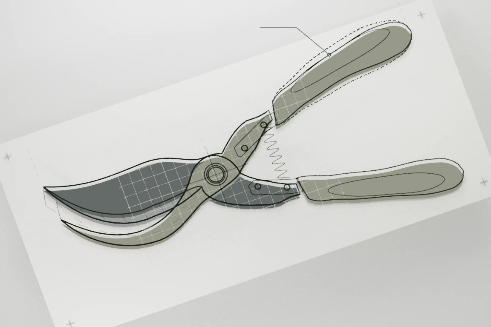

ZROBIONE JAK TRZEBA
Kontrolowana produkcja OEM zamienia zatwierdzone specyfikacje w powtarzalną serię.

Czy można tutaj zwęzić uchwyt?Tak wygląda poprawiony obrys.

Otwory prowadzące mają wspólną bazę.Tolerancje wynikają z zatwierdzonego rysunku.

Stal ostrza i tworzywo uchwytu.Kupujemy materiały w uzgodnionych gatunkach.

Wygoda uchwytu i praca przegubu.Zatwierdzenie próbki poprzedza produkcję.

Ułożenie ostrzy i powrót sprężyny.Obie cechy porównujemy z zatwierdzoną próbką.

Pudełko z kartonu i wkład z formowanej masy papierowej.Sprawdzamy dokumenty materiałowe dla danego rynku.

Państwa projekt graficzny i opakowanie.Wspólnie sprawdzamy próbę druku i otwór do zawieszenia.
Projekt poglądowy. Ostateczny dobór części i procesu produkcji zależy od zatwierdzonego rysunku.
Korespondencja i oznaczenia techniczne mają charakter poglądowy. Oznakowanie opakowania zależy od materiału i rynku docelowego.
飛庄 · TOBISHO · ARS VS-8XZ · ARS · PDFKontrolowana produkcja OEM zamienia zatwierdzone specyfikacje w powtarzalną serię.
Elastyczne planowanie produkcji amortyzuje zmiany materiału, pochodzenia i dostawy.
Produkt, marka i rynek pozostają własnością klienta — nie naszą.
Ręczne narzędzia ogrodowe i polowe, przede wszystkim metal kuty i formowany — wytwarzane pod cudzymi markami. Żadnych elektronarzędzi, żadnych chwilowych mód i nigdy własnej marki detalicznej. To cała firma.